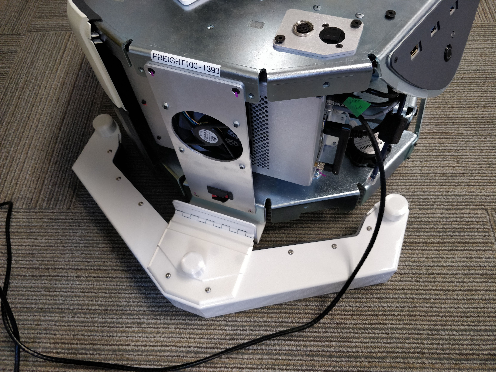
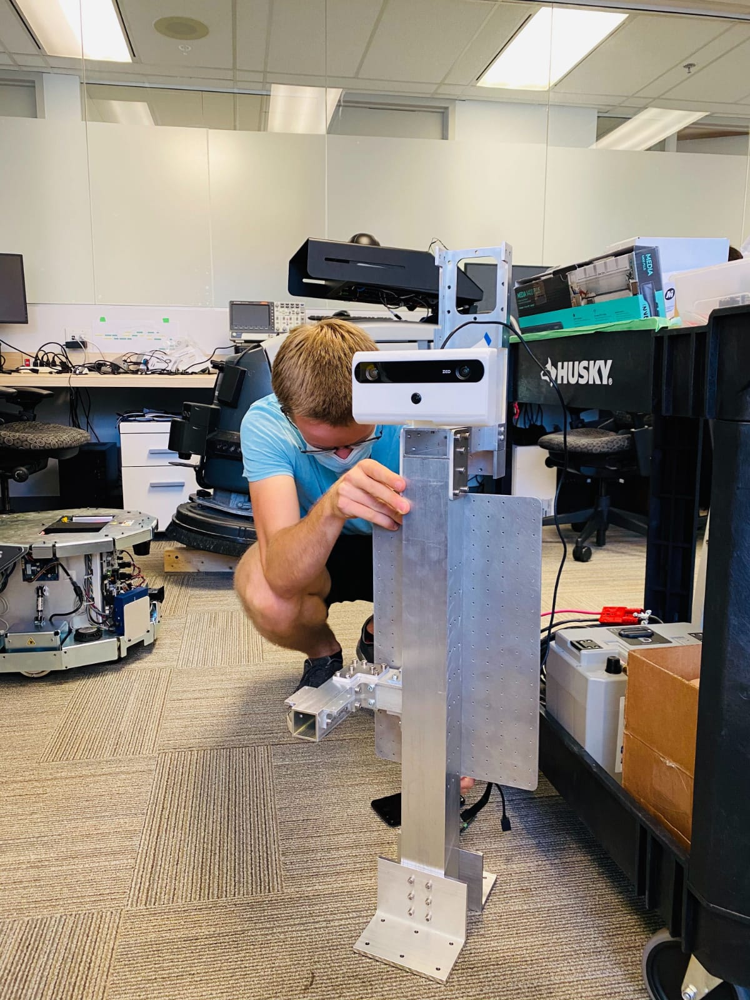
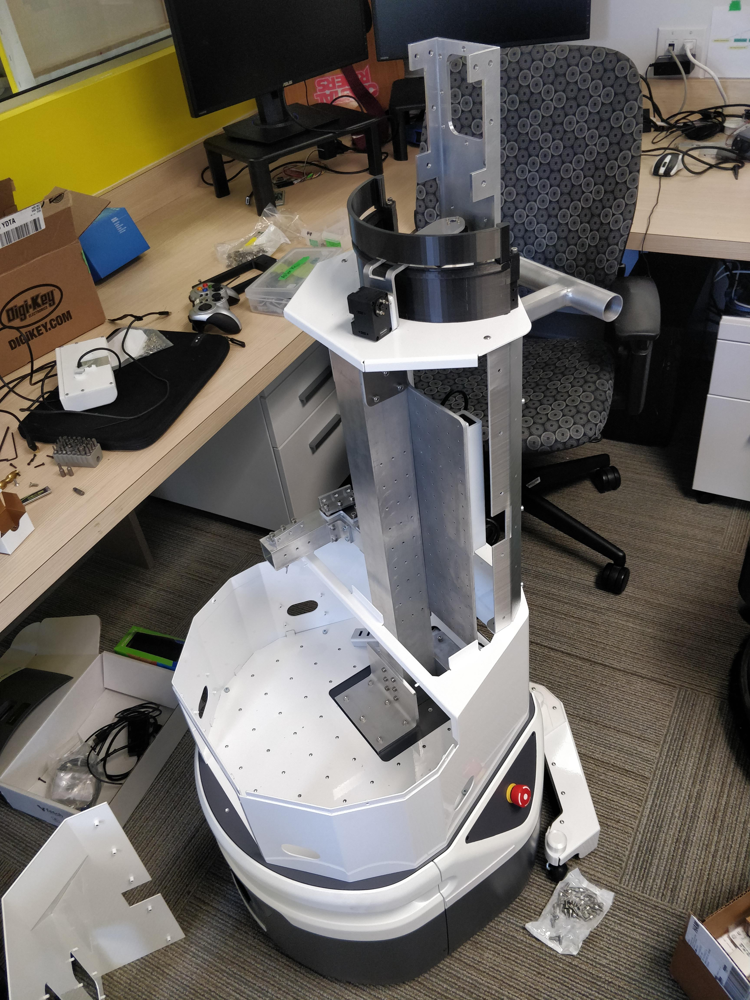
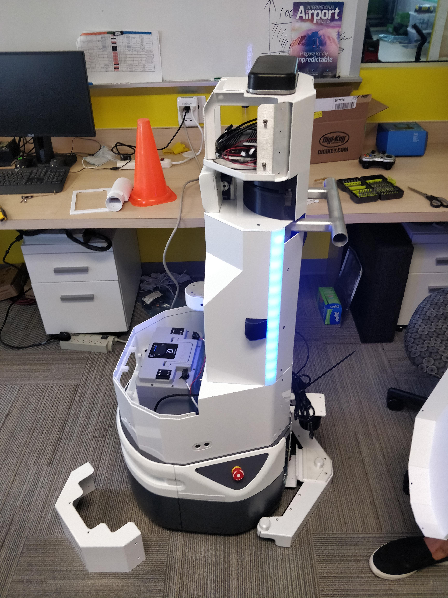
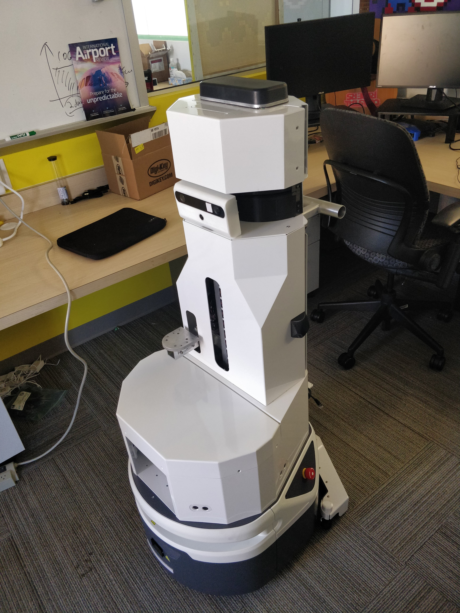
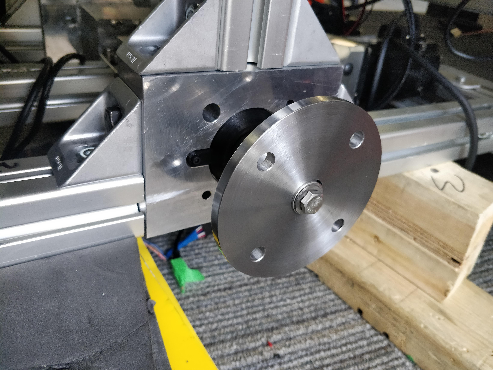
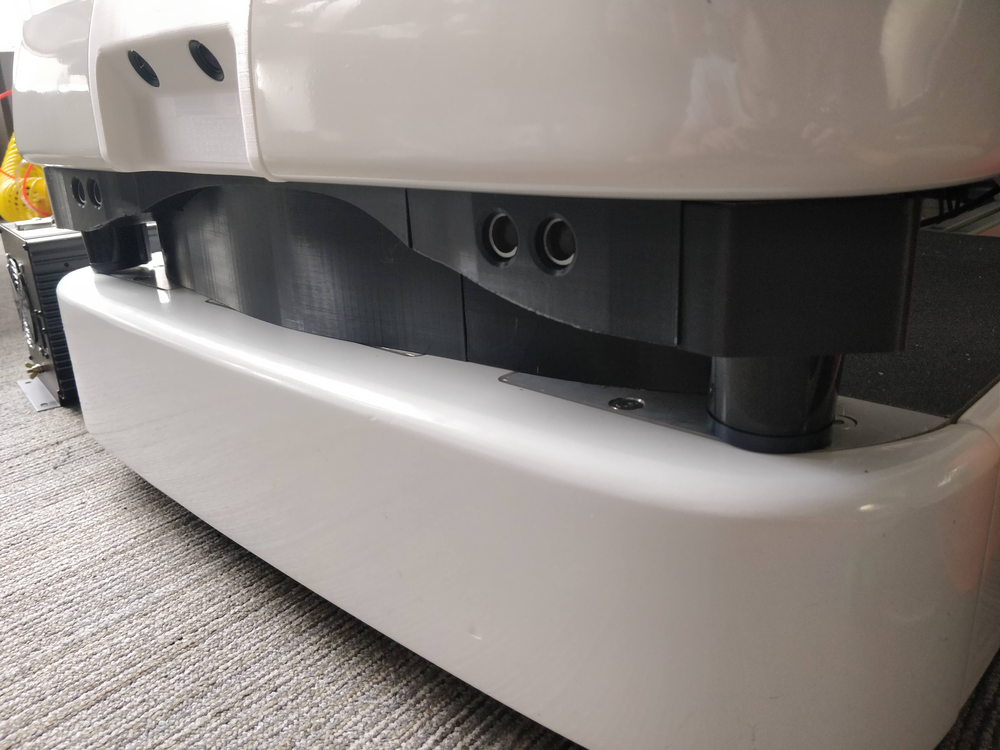
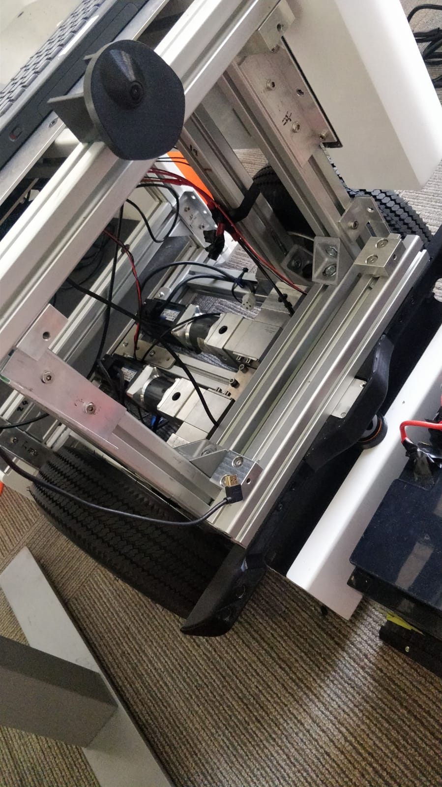
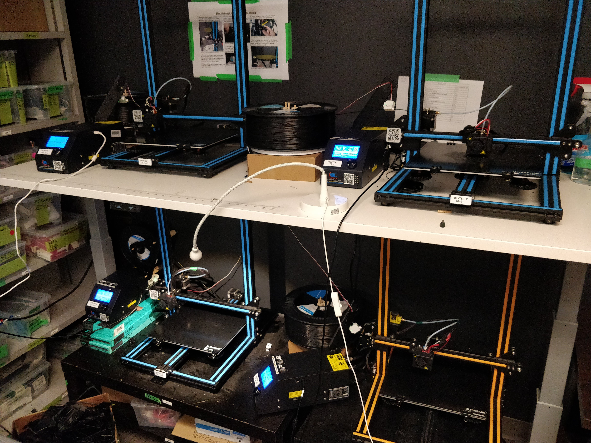

A&K Robotics - Robotics Engineer Intern
Date: May - August 2020
A&K Robotics is a Vancouver-based startup which specializes in autonomous mobile robots. The hardware team consisted of one electrical engineer, one mechanical engineer, and myself. During my 4 months at the company we were tasked with designing from scratch two separate mobile robots, and implementing substantial changes to two more. I effectively worked as a third, equal member of the hardware team, and contributed substantially to each project.


This involved mechanical and electrical design and some simulation on MATLAB and Python. For example, I designed a full drive and suspension system, a 6-DOF robotic arm and arm end effector, complex electronics enclosures, chassis and shells of robots, electronics layouts, PCBs, and more. Much of the work was carried out under considerable time pressure, and with a focus not only on functionality, but on form and aesthetic for the customer. I worked many 16+ hour days, and learned a lot about product development, fabrication methods, and mobile robots, as well as of course mechanical and electrical design. Through this experience I have become very adept at designing for 3D printers as well as sheet metal, CNC, waterjet, and general machining, and at troubleshooting and modifying 3D printers. One of the robots was recently introduced at the Vancouver Airport (YVR) (see here).
The first robot I helped design was an autonomous robot with UV disinfection system for the floor as well as one for any surface, mounted on a Kinova arm.
Floor UV Disinfection System I designed for Fetch robot:
Actuated robot head I designed with depth and RGB cameras.

Head installed on frame. Here I am just placing electronics on their mount plate.
Adding the shell to the frame:

Testing LEDs and electronics:

The (nearly) completed robot (minus a few sensor enclosures, and with the back plate uninstalled to work on the electronics):

The second robot was an autonomous wheelchair robot for airports: Wheel hub installed in the mobile robot drive system I designed
Design for form as well as function.
Looking under the seat. The electronics and batteries were subsequently placed in this space. The drivetrain is visible in the base.

Other:
The 3D printers I managed, modified, disassembled and reassembled, etc.
